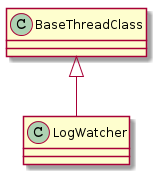
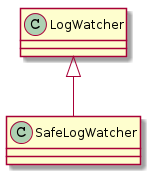

A module for watchers of kmsg logs.

| LogWatcher(output[, event, connection, ...]) | A LogWatcher watches a log. | ||
| LogWatcher.timestamp |
|
||
| LogWatcher.stop | This sets the event (to match the Watcher). | ||
| LogWatcher.stopped |
|
||
| LogWatcher.execute() | This is a hack until the run can be generalized to accept the command (e.g. | ||
| LogWatcher.run(connection) | Runs an infinite loop that executes cat on self.arguments | ||
| LogWatcher.start([connection]) | Runs self in a thread. |

| SafeLogWatcher(*args, **kwargs) | A SafeLogWatcher uses the connection’s lock to protect calls to the connection. |
| SafeLogWatcher.run() | Runs an infinite loop that reads the tail of the log. |
if __name__ == "__main__":
import sys
kw = LogWatcher(sys.stdout)
print kw.arguments
kw.run()